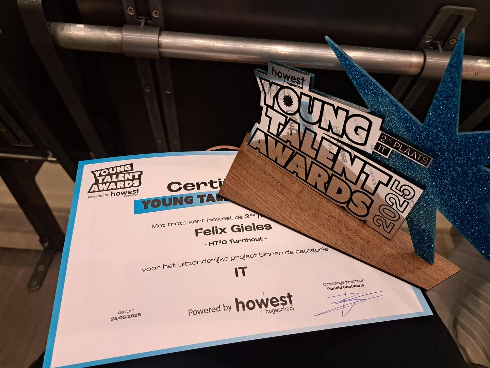

Felix Gieles (18) van HT²O-school wint Young Talent Award: “Prachtige erkenning van zijn talent”
De STEM-school HT²O in Turnhout vierde een dubbele mijlpaal. De eerste lichting leerlingen van de nieuwe richting Informatica- en communicatiewetenschappen studeerde vorige week af. Bovendien werd leerling Felix Gieles (18) uit Hoogstraten bekroond met een Young Talent Award van de hogeschool Howest.